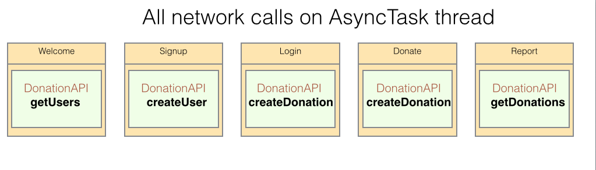
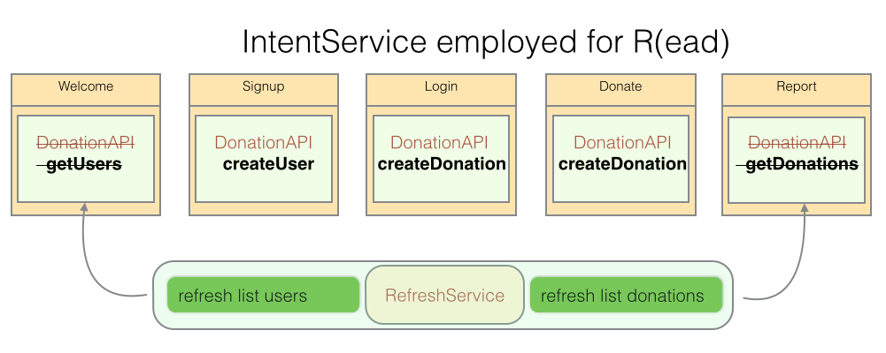
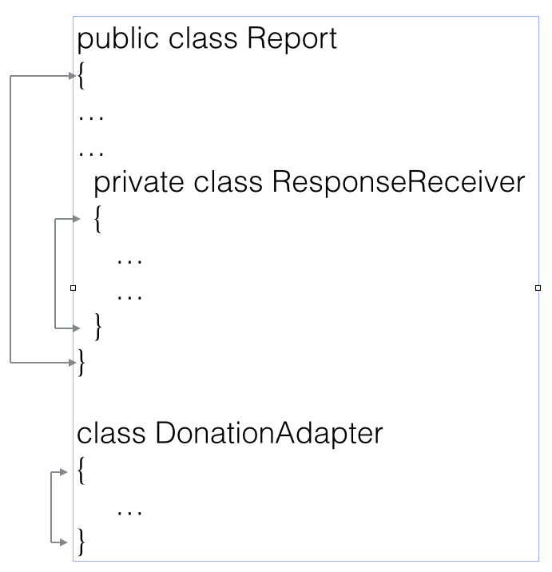
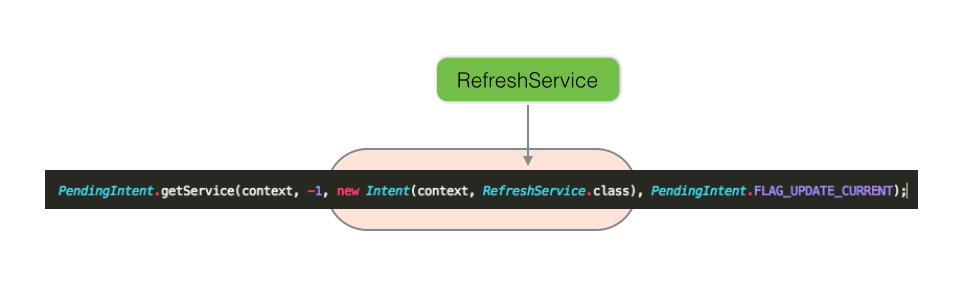

Donation
Refactor Donation Android client to refresh donations list using a background service in a non-blocking call, replacing the present Response interface.
Preview
Figure 1 illustrates the legacy approach to network calls.
- All calls are made on a worker thread using the AsyncTask class.

This lab will provide instructions on how to replace AsyncTask with an IntentService class to R(ead) the list of Donations from the server.
Some of the advantages in using a service to retrieve the lists of users and donations are:
- The present approach, using AsyncTask, may result in situations where continuing execution of the program can only take place once the network call has returned. This 'blocking' behaviour is contrary to the spirit of using a worker thread.
- The service can be started immediately the device (phone, emulator) is switched on and can run in the background at preset intervals.
It is left as an exercise to repeat this approach to retrieve the list of Users.

Preview
Introduction
Your starter code is available to download locally as follows:
- donation-android-v6. This the Android client that we will refactor in this lab.
- donation-service-play. This is the corresponding server app.
- donation-service-play-test is the corresponding test app.
Here is a tip to fix build path errors in donation-service-play:
- Within the project in Eclipse (or using a file manager), delete the eclipse folder.
- Change directory to the donation-service-play folder.
- Run these commands in succession:
play eclipsify
play deps
We shall introduce two further Android building blocks in this lab:
-
Services
- run in background without a user interface
- used to retrieve list donations (update the Report view)
- sends requests to server at pre-set intervals
-
Broadcast Receivers
- receiver is dormant code activated by specific event
- activated when service retrieves donation list
- causes list to be refreshed without user intervention
The purpose of the lab is to replace the use of the AsyncTask with IntentService.
- Only for R(ead) donation list
- AsyncTask remains in place for retrieval of user list.
Both of these classes allow operations to be run on a worker thread.
An interesting comparison of IntentService and AsyncTask is available in this stackoverflow article: Intent service and its advantage
For example, here are some advantages in using IntentService:
- Easy to implement. It only has one method that you need to override
- Easy to pass data to. You just use the intent extras mechanism
- Available everywhere in your app. It's registered in manifest.xml
- Handles multiple intents. These are queued and executed sequentially.
- Self terminating. When intents in the queue have been processed, the service stops.
AsyncTask is appropriate for C(reate), U(pdate) and D(elete) and, as we have seen, may be implemented also for (R)ead. However, using a service constitutes a more elegant approach to reading data in this instance.
Lab summary
The following summarises the content of this lab:
- Implement a service that starts when device switched on (phone or emulator)
- Configure broadcast receiver to activate when donation list received and to trigger refresh report view
- Set alarm that restarts the service at pre-set intervals.
- A default interval of 15 minutes is hardwired.
- A user may change this refresh interval in the preference settings
- Include menu item to allow the refresh service to be started manually.
Helpers
Create a package android.helpers and add these classes. You have already used supersets of these classes in MyRent and MyTweet.
package android.helpers;
import android.app.Activity;
import android.content.Intent;
import android.support.v4.app.NavUtils;
public class IntentHelper
{
public static void navigateUp(Activity parent)
{
Intent upIntent = NavUtils.getParentActivityIntent(parent);
NavUtils.navigateUpTo(parent, upIntent);
}
}
package android.helpers;
import android.util.Log;
public class LogHelpers
{
public static void info(Object parent, String message)
{
Log.i(parent.getClass().getSimpleName(), message);
}
}
RefreshService
Here we shall create RefreshService, a subclass of Android's IntentService.
Create a package app.services.
In this package create a new class, RefreshService that subclasses IntentService:
package app.services;
public class RefreshService extends IntentService
{
public RefeshService()
{
super("RefreshService");
}
}
Add an import statement for IntentService:
import android.app.IntentService;
Using QuickFix or manually, add unimplemented method:
@Override
protected void onHandleIntent(Intent intent)
{
// TODO Auto-generated method stub
}
An import for Intent is required:
import android.content.Intent;
The code should now be error free.
The method onHandleIntent runs on a worker thread once an instance of RefreshService is started.
- when the method has been executed the service automatically stops.
In this method we shall:
- make a network call to retrieve the list of donations.
- recall that Android does not permit such a call from the main thread (the UI thread).
- when we obtain the list of donations we shall broadcast an Intent that will be detected in the Report activity where we shall shortly introduce a broadcast receiver to accept this intent.
- once this intent has been received we shall run the appropriate code to refresh the report view.
Here is the complete onHandleIntent method:
/*
* invoked on worker thread(non-Javadoc)
* @see android.app.IntentService#onHandleIntent(android.content.Intent)
*/
@Override
protected void onHandleIntent(Intent intent)
{
try
{
String response = Rest.get("/api/users/" + app.currentUser.id + "/donations");//[1]
List<Donation> donationList = JsonParsers.json2Donations(response);//[2]
app.donations = donationList; //[3]
LogHelpers.info(this, "Donation list received");//[4]
}
catch(Exception e)//[5]
{
LogHelpers.info(this, "failed to retrieve donations");
}
}
This triggers several errors that may be fixed as follows:
Create a new field:
DonationApp app;
Override onCreate and initialize app:
@Override
public void onCreate()
{
super.onCreate();
LogHelpers.info(this, "onCreated");
app = (DonationApp)getApplication();
}
Add missing imports. Here is the complete list of imports required up to this point:
import java.util.List;
import android.app.IntentService;
import android.content.Intent;
import android.helpers.LogHelpers;
import app.http.Rest;
import app.main.DonationApp;
import app.models.Donation;
import app.models.JsonParsers;
Add an onDestroy method, soley for the purpose of creating a log entry:
@Override
public void onDestroy()
{
super.onDestroy();
LogHelpers.info(this, "onDestroyed");
}
Note what happens, so far, within onHandleIntent:
[1] R(ead) list of donations across network
[2] Convert the response to a list of Donation objects
[3] Replace the list of donations in the app with newly retrieved list
[4] Log message indicating success
[5] Throw exception if failure to retrieve list
Later we shall provide code to broadcast an intent to be received by the Report activity.
But first, in the next step, we shall introduce a menu item to manually start this refresh service.
Start service
Intoduce a new string element in res/values/strings.xml:
<string name="refresh">Refresh Donation List</string>
Add a menu item to res/menu/report.xml:
<item
android:id="@+id/action_refresh"
android:icon="@android:drawable/ic_menu_rotate"
android:showAsAction="always"
android:title="@string/refresh"/>
Run the app and verify that the menu item has been added as shown in Figure 1.
- But first run donation-service-play.
- In a terminal cd into the donation-service folder and execute play run.
- Then, on the phone or emulator, Sign Up, Log In and switch to the Donation. The refresh menu item (rotate icon) should be present as shown in Figure 1.

Make the following changes to Report.java:
- Import RefreshService
import app.services.RefreshService;
Add a new case to onOptionsItemSelected to handle the refresh menu event:
case R.id.action_refresh: startService(new Intent(this, RefreshService.class));
return true;
Observe what's happening:
- when the rotate icon is pressed the code routes through the onOptionsItemSelected method and invokes startService
- the refresh service is started by calling startService
Because we are replacing AsyncTask with IntentService, it is no longer necessary to implement Response
public class Report extends Activity
Remove the implemented Response methods.
Also, remove the DonationServiceAPI.getDonations call in onCreate.
Modify the manifest file. Add a service node before the application close tag:
<service android:name="app.services.RefreshService"
android:exported="false"/>
Without this service element the application will not route through the RefreshService.onHandleIntent method and will not give any easily detected warning of this omission.
Broadcast receiver
Here we shall add code to broadcast an intent from within RefreshService.onHandleIntent and receive this broadcast in Report.
- When the broadcast is received in Report the updated donation list is rendered by invoking:
- adapter.notifyDataSetChanged
- Recall that in RefreshService.onHandleIntent we have updated the list of donations stored in DonationApp.
RefreshService
Add this method to RefreshIntent class:
private void broadcastIntent()
{
Intent localIntent = new Intent(Report.BROADCAST_ACTION);
// Broadcasts the Intent to receivers in this app.
LocalBroadcastManager.getInstance(this).sendBroadcast(localIntent);
}
This requires two imports:
import app.activities.Report;
import android.support.v4.content.LocalBroadcastManager;
Invoke the method in onHandleIntent:
@Override
protected void onHandleIntent(Intent intent)
{
try
{
...
...
broadcastIntent();
}
catch(Exception e)
{
...
}
}
Report
Define the field BROADCAST_ACTION:
public static final String BROADCAST_ACTION = "app.activities.Report";
Declare an IntentFilter:
private IntentFilter intentFilter;
Add the necessary import statement:
import android.content.IntentFilter;
Add a method: registerBroadcastReceiver
private void registerBroadcastReceiver(IntentFilter intentFilter)
{
ResponseReceiver mResponseReceiver = new ResponseReceiver();
// Registers the ResponseReceiver and its intent filters
LocalBroadcastManager.getInstance(this).registerReceiver(mResponseReceiver, intentFilter);
}
One of the errors generated is caused by the inability to resolve the ResponseReceiver class. We shall add this shortly.
Import LocalBroadCastManager:
import android.support.v4.content.LocalBroadcastManager;
As the last statements in onCreate, instantiate the intentFilter and invoke registerBroadCastReceiver:
@Override
public void onCreate(Bundle savedInstanceState)
{
...
intentFilter = new IntentFilter(BROADCAST_ACTION);
registerBroadcastReceiver(intentFilter);
}
Create an inner private class ResponseReceiver that extends BroadcastReceiver.
//Broadcast receiver for receiving status updates from the IntentService
private class ResponseReceiver extends BroadcastReceiver
{
private void ResponseReceiver() {}
// Called when the BroadcastReceiver gets an Intent it's registered to receive
@Override
public void onReceive(Context context, Intent intent)
{
//TODO
}
}
Add import statements:
import android.content.BroadcastReceiver;
When the intent broadcast from within RefreshService is received in Report, the method onReceive is invoked. It is here that we invoke notifyDataSetChanged:
Replace ResponseReceiver.onReceive with this:
@Override
public void onReceive(Context context, Intent intent)
{
adapter.donations = app.donations;
adapter.notifyDataSetChanged();
}
Import BroadcastReceiver:
import android.content.BroadcastReceiver;
Caution: Recall the existence of a second class in the compilation unit Report.java, namely DonationAdapter.
- Here is the refactored layout of the compilation unit (Report.java): 
Test
Test that the service works as follows:
- Method 1:
- Place a breakpoint on the statement adapter.notifyDataSetChanged() in the method ResponseReceiver.onReceive in the compilation unit Report.java
- Launch Donation service
- Launch Donation client
- Login and switch to the Report view
- Click on the rotate menu item
- The program execution should stop at the breakpoint. This confirms that the service has successfully initiated a network and transmitted an intent to the Report activity.
- Allowing the program to continue past the breakpoint to conclusion should see the latest list of Donations being rendered.
- Method 2:
- Set up Donation JUnit test app to generate test data
- A single user and several associated donations will suffice
- Ensure the Donation service is running
- Run Donation client. If you run in debug then better to remove all breakpoints.
- Log in as the user you created and switch to Report
- Click on the refresh button. The donations you created in test should be rendered.
- Make some changes to the Donation test: create additional donations for the same user.
- Switch to Donation client (the emulator or phone) and click on refresh.
- The newly added donations should replace the existing list
- Set up Donation JUnit test app to generate test data
Receiver
We shall now add a BroadcastReceiver subclass that will:
- start RefreshService when the device is started
- re-start the service at pre-set intervals thereafter
For the moment we will accept the default interval between refreshes which will be 15 minutes.
In a further step we shall introduce preferences and a facility for the user to input a refresh interval.
Create a new package app.receivers
- In the package create a class BootReceiver that subclasses the Android class BroadcastReceiver.
package app.receivers;
import android.content.BroadcastReceiver;
public class BootReceiver extends BroadcastReceiver
{
}
Add unimplemented method:
@Override
public void onReceive(Context context, Intent intent)
{
// TODO Auto-generated method stub
}
Implement onReceive as follows:
@Override
public void onReceive(Context context, Intent intent)
{
android.os.Debug.waitForDebugger(); //this will facilitate stopping at breakpoint placed on code following in this method
long interval = DEFAULT_INTERVAL;
PendingIntent operation = PendingIntent.getService(context, -1, new Intent(context, RefreshService.class),
PendingIntent.FLAG_UPDATE_CURRENT);
AlarmManager alarmManager = (AlarmManager) context.getSystemService(Context.ALARM_SERVICE);
if (interval == 0)
{
alarmManager.cancel(operation);
LogHelpers.info(this, "cancelling operation");
}
else
{
alarmManager.setInexactRepeating(AlarmManager.RTC, System.currentTimeMillis(), interval, operation);
LogHelpers.info(this, "setting repeat operation for: " + interval);
}
LogHelpers.info(this, "onReceived");
}
Define the DEFAULT_INTERVAL:
private static final long DEFAULT_INTERVAL = AlarmManager.INTERVAL_FIFTEEN_MINUTES;
Observe RefreshService intent argument in PendingIntent.getService:

onReceive creates an AlarmManager object that is used in starting the RefreshService at intervals of, in this case, DEFAULT_INTERVAL.
Add permission to the manifest file:
<uses-permission android:name="android.permission.RECEIVE_BOOT_COMPLETED" />
Also in the manifest, register the receiver:
<!-- Register Broadcast Receiver : permission included above-->
<receiver android:name="app.services.BootReceiver">
<intent-filter >
<action android:name="android.intent.action.BOOT_COMPLETED"/>
</intent-filter>
</receiver>
The refresh service will start on boot the Android device and re-start indefinitely at specified intervals thereafter.
Good alarm system design is essential to efficient running of an app and use of resources. Some official documentation may be accessed here.
Preferences
Here we shall add a Preferences module and use it to store a refresh interval.
- this will be useful for testing, for example.
Create a new folder res/xml and add a file: settings.xml
File: settings.xml
<?xml version="1.0" encoding="utf-8"?>
<PreferenceScreen xmlns:android="http://schemas.android.com/apk/res/android" >
<EditTextPreference
android:key="refresh_interval"
android:summary="@string/refresh_subtitle"
android:title="@string/refresh" />
</PreferenceScreen>
Add a new string element to res/values/strings.xml
<string name="refresh_subtitle">Enter refresh interval (minutes)</string>
Clearly the choice of minutes has been made with testing in mind. Production code would likely use much larger time units.
Add a new package app.settings in which the follows files should be located:
SettingsActivity.java
package app.settings;
import android.app.Activity;
import android.os.Bundle;
public class SettingsActivity extends Activity
{
@Override
protected void onCreate(Bundle savedInstanceState)
{
super.onCreate(savedInstanceState);
if (savedInstanceState == null)
{
SettingsFragment fragment = new SettingsFragment();
getFragmentManager().beginTransaction().add(android.R.id.content, fragment, fragment.getClass().getSimpleName())
.commit();
}
;
}
}
SettingsFragment.java
package app.settings;
import static android.helpers.IntentHelper.navigateUp;
import android.content.Intent;
import android.content.SharedPreferences;
import android.content.SharedPreferences.OnSharedPreferenceChangeListener;
import android.os.Bundle;
import android.preference.PreferenceFragment;
import android.preference.PreferenceManager;
import android.view.LayoutInflater;
import android.view.MenuItem;
import android.view.View;
import android.view.ViewGroup;
import app.donation.R;
import app.services.RefreshService;
public class SettingsFragment extends PreferenceFragment implements OnSharedPreferenceChangeListener
{
private SharedPreferences settings;
@Override
public void onCreate(Bundle savedInstanceState)
{
super.onCreate(savedInstanceState);
setHasOptionsMenu(true);
addPreferencesFromResource(R.xml.settings);
}
@Override
public View onCreateView(LayoutInflater inflater, ViewGroup container, Bundle savedInstanceState)
{
getActivity().getActionBar().setDisplayHomeAsUpEnabled(true);
return super.onCreateView(inflater, container, savedInstanceState);
}
@Override
public void onStart()
{
super.onStart();
settings = PreferenceManager.getDefaultSharedPreferences(getActivity());
settings.registerOnSharedPreferenceChangeListener(this);
}
@Override
public boolean onOptionsItemSelected(MenuItem item)
{
switch (item.getItemId())
{
case android.R.id.home:
navigateUp(getActivity());
return true;
default:
return super.onOptionsItemSelected(item);
}
}
@Override
public void onSharedPreferenceChanged(SharedPreferences sharedPreferences, String key)
{
}
}
Register the new activity in the manifest file.
<activity
android:name="app.settings.SettingsActivity"
android:label="@string/action_settings" >
<meta-data
android:name="android.support.PARENT_ACTIVITY"
android:value=".activities.ReportActivity"/>
</activity>
Note that we are making provision for using the Up button to navigate to the Report activity once done in Settings.
In Report introduce a menu handler in onOptionsItemSelected:
case R.id.action_settings:
startActivity(new Intent(this, SettingsActivity.class));
return true;
This import statment is required:
import app.settings.SettingsActivity;
You may wish to repeat for the Donation view. At the moment the menu settings item is now wired up in this view (Report).
Refactor BootReceiver.onReceive to use the value input in preferences for the refresh interval.
- We are not obligated to input this value as the default 15 minutes will be used if no value has been input in preferences.
- In reality 15 minutes would, perhaps, be much too small an interval. Remember that network traffic is expensive not only on the client but generally more so on the server. See, for example, this Wikipedia article on Denial-of-service attacks.
- The input value should be in minutes: this is converted to milliseconds in the onReceive method which is the unit of time specified as argument in AlarmManager.setInexactRepeating.
package app.receivers;
import android.app.AlarmManager;
import android.app.PendingIntent;
import android.content.BroadcastReceiver;
import android.content.Context;
import android.content.Intent;
import android.content.SharedPreferences;
import android.helpers.LogHelpers;
import android.preference.PreferenceManager;
import app.services.RefreshService;
public class BootReceiver extends BroadcastReceiver
{
public static int REQUESTCODE = -1;
private static final long DEFAULT_INTERVAL = AlarmManager.INTERVAL_FIFTEEN_MINUTES;
@Override
public void onReceive(Context context, Intent intent)
{
android.os.Debug.waitForDebugger(); //this will facilitate stopping at breakpoint placed on code following in this method
SharedPreferences prefs = PreferenceManager.getDefaultSharedPreferences(context);
long interval = Long.parseLong(prefs.getString("refresh_interval", Long.toString(DEFAULT_INTERVAL)));
interval *= 60000;//here we convert minutes to milliseconds since input at settings menu is specified in minutes
interval = interval < 60000 ? 60000 : interval; //Think of the poor server. Denial of service? So we set 60 seconds as the minimum
PendingIntent operation = PendingIntent.getService(context, REQUESTCODE, new Intent(context, RefreshService.class),
PendingIntent.FLAG_UPDATE_CURRENT);
AlarmManager alarmManager = (AlarmManager) context.getSystemService(Context.ALARM_SERVICE);
alarmManager.cancel(operation);//cancel any existing alarms with matching intent
alarmManager.setInexactRepeating(AlarmManager.RTC, System.currentTimeMillis(), interval, operation);
LogHelpers.info(this, "setting repeat operation for: " + interval);
LogHelpers.info(this, "onReceived");
}
}
You can now test this code by placing a breakpoint in the method before launching Donation app in a device or emulator.
Exercise
Retrieve the list of users using a service:
- Modify RefreshService to retrieve the list of users from the server (in addition to the list of donations).
- Remove the DonationServiceAPI.getUsers call in Welcome, replacing it with other appropriate code (should any such be necessary).
The completed project donation-android-v7 is available to download here